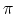

A polygon is called orthogonal if its edges meet at right angles. If each of the pieces of a partition are rectangular, then the partition is a rectilinear partition. A rectilinear partition of an orthogonal polygon can be obtained by extending each edge incident to a reflex vertex (the interior angle between its two incident vertices is at least 
Write a program that, given a sequence of vertices, determine the rectilinear partition of a simple orthogonal polygon without holes.
The first line contains an integer N
For each test case, the output must follow the description below.
The outputs of two consecutive cases will be separated by a blank line.
The output is the rectilinear partition of the polygon, where each set of four lines represent a rectilinear piece. The pieces must be listed from left to right and from top to bottom. The vertexes of each piece must be listed as indicated in Figure (b).
Input
The input file contains several test cases, each of them as described below.
 N
N 50
50
 X
X
 20
20
Output
Sample Input
8
1 2
4 2
4 1
5 1
5 5
3 5
3 4
1 4
Sample Output
1 4
1 2
3 2
3 4
3 5
3 4
4 4
4 5
3 4
3 2
4 2
4 4
4 5
4 4
5 4
5 5
4 4
4 2
5 2
5 4
4 2
4 1
5 1
5 2